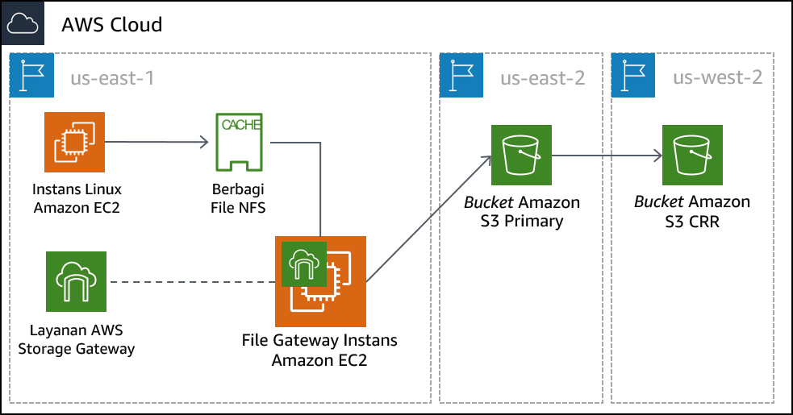

Modul 14 – Lab Terpandu: Penyimpanan Hibrida dan Migrasi Data dengan File Gateway AWS Storage Gateway
Gambaran umum dan tujuan lab
Di lab ini, Anda akan menggunakan layanan Gateway File AWS Storage Gateway untuk memasang Network File System (NFS) ke penyimpanan data on-premise. Anda kemudian akan mereplikasi data ke bucket S3 di AWS. Selain itu, Anda akan mengonfigurasi fitur lanjutan Amazon S3, seperti kebijakan siklus hidup Amazon S3 dan replikasi lintas Wilayah.
Setelah menyelesaikan lab ini, Anda akan mampu:
- Mengonfigurasi Gateway File dengan file share NFS dan memasangnya ke instans Linux
- Memigrasikan satu set data dari instans Linux ke bucket S3
- Membuat dan mengonfigurasi bucket S3 primer untuk memigrasikan data server on-premise ke AWS
- Membuat dan mengonfigurasi bucket S3 sekunder yang akan digunakan untuk replikasi lintas Wilayah
- Membuat kebijakan siklus hidup S3 untuk mengelola data secara otomatis dalam bucket
Durasi
Diperlukan waktu sekitar 90 menit untuk menyelesaikan lab ini.
Pembatasan layanan AWS
Dalam lingkungan lab ini, akses ke layanan AWS dan tindakan layanan mungkin dibatasi untuk orang-orang yang diperlukan untuk menyelesaikan instruksi lab. Anda mungkin akan mengalami error jika mencoba mengakses layanan lain atau melakukan tindakan di luar yang dijelaskan di lab ini.
Mengakses Konsol Manajemen AWS
Di bagian atas instruksi ini, pilih Start Lab (Mulai Lab) untuk meluncurkan lab Anda.
Panel Start Lab (Mulai Lab) terbuka dan menampilkan status lab.
Tip: Jika Anda memerlukan lebih banyak waktu untuk menyelesaikan lab, mulai ulang pengatur waktu untuk lingkungan dengan memilih tombol Start Lab (Mulai Lab) lagi.
Tunggu hingga panel Start Lab (Mulai Lab) menampilkan pesan Lab status: ready (Status lab: siap), lalu tutup panel dengan memilih X.
Di bagian atas instruksi ini, pilih AWS.
Tindakan ini akan membuka Konsol Manajemen AWS di tab browser baru. Anda akan masuk ke sistem secara otomatis.
Tip: Jika tab browser baru tidak terbuka, banner atau ikon biasanya berada di bagian atas browser Anda dengan pesan bahwa browser Anda mencegah situs membuka jendela sembulan. Pilih banner atau ikon, lalu pilih Allow pop-ups (Izinkan sembulan).
Atur tab AWS Management Console(Konsol Manajemen AWS) agar ditampilkan bersama instruksi ini. Idealnya, Anda perlu membuka kedua tab browser secara bersamaan, sehingga Anda dapat mengikuti langkah-langkah lab dengan lebih mudah.
Jangan mengubah Wilayah kecuali secara khusus diperintahkan untuk melakukannya.
Tugas 1: Meninjau arsitektur lab
Lingkungan lab ini menggunakan total tiga Wilayah AWS. Instans EC2 Linux yang mengemulasi server on premise di-deploy ke Wilayah us-east-1 (N. Virginia). Peralatan virtual Storage Gateway di-deploy ke Wilayah yang sama dengan server Linux. Dalam skenario dunia nyata, peralatan akan di-deploy di lingkungan VMware vSphere atau Microsoft Hyper-V, atau sebagai peralatan Storage Gateway fisik.
Bucket S3 primer dibuat di Wilayah us-east-2 (Ohio). Data dari host Linux disalin ke bucket S3 primer. Bucket ini juga bisa disebut sumber.
Bucket S3 sekunder dibuat di Wilayah us-west-2 (Oregon). Bucket sekunder ini adalah target untuk kebijakan replikasi lintas Wilayah. Bucket ini juga disebut tujuan.

Tugas 2: Membuat bucket S3 primer dan sekunder
Sebelum mengonfigurasi Gateway File, Anda harus membuat bucket S3 primer (atau sumber) tempat Anda akan mereplikasi data. Anda juga akan membuat bucket sekunder (atau tujuan) yang akan digunakan untuk replikasi lintas Wilayah.
- Di AWS Management Console (Konsol Manajemen AWS), di menu Services (Layanan), pilih S3.
- Pilih Create bucket (Buat bucket), lalu konfigurasikan pengaturan berikut:
- Bucket name (Nama bucket): Buat nama yang dapat Anda ingat dengan mudah. Nama tersebut harus unik.
- Region (Wilayah): AS Timur (Ohio)
Pilih Create (Buat)
Klik bucket yang Anda buat dan klik tab Properties (Properti).
Di bawah Versioning, klik Enable versioning (Aktifkan versioning) dan klik Save (Simpan).
Untuk replikasi lintas Wilayah, Anda harus mengaktifkan versioning baik untuk bucket sumber maupun tujuan.
Ulangi langkah-langkah sebelumnya dalam tugas ini untuk membuat bucket kedua dengan konfigurasi berikut:
- Bucket name (Nama bucket): Buat nama yang dapat Anda ingat dengan mudah. Nama tersebut harus unik.
- Region (Wilayah): AS Barat (Oregon)
- Versioning: Enabled (Aktif)
Tugas 3: Mengaktifkan replikasi lintas Wilayah
Karena telah membuat dua bucket S3 dan mengaktifkan versioning pada mereka, kini Anda dapat membuat kebijakan replikasi.
- Pilih nama bucket sumber yang Anda buat di Wilayah AS Timur (Ohio).
- Pilih tab Management (Manajemen), lalu pilih Replication (Replikasi)
- Pilih Add rule (Tambahkan aturan), lalu konfigurasikan pengaturan ini:
Set source (Tetapkan sumber): Entire bucket (Seluruh bucket)
Pilih Next (Berikutnya)
Destination bucket (Bucket tujuan):
- Buckets in this account (Bucket di akun ini)
- Pilih bucket yang Anda buat di Wilayah AS Barat (Oregon). (Mungkin Anda perlu menggulir ke bawah untuk menemukan bucket.)
Pilih Next (Berikutnya)
- Pada layar Configure rules options (Konfigurasi opsi aturan), konfigurasikan pengaturan ini:
IAM role: S3-CRR-Role
- Catatan: Untuk menemukan peran AWS Identity and Access Management (IAM), di kotak pencarian, masukkan:
S3-CRR(Peran ini telah dibuat sebelumnya dengan izin yang diperlukan untuk lab ini)
- Catatan: Untuk menemukan peran AWS Identity and Access Management (IAM), di kotak pencarian, masukkan:
Rule name (Nama aturan):
crr-full-bucket
- Pilih Next (Berikutnya)
- Tinjau pengaturan, lalu pilih Save (Simpan)
Catatan: Jika Anda menemukan pesan The replication rule is saved, but it might not work (Aturan replikasi disimpan, tetapi mungkin tidak berhasil), Anda dapat mengabaikannya dan melanjutkan ke langkah berikutnya.
- Kembali ke bucket yang Anda buat di Wilayah AS Timur (Ohio).
- Unggah file dari komputer lokal Anda ke bucket.
Untuk lab ini, gunakan file kecil yang tidak berisi informasi sensitif, seperti file teks kosong. **
- Tunggu sampai file diunggah, lalu kembali ke bucket yang Anda buat di Wilayah AS Barat (Oregon). File yang Anda unggah juga harus disalin ke bucket ini.
Catatan: Anda mungkin harus memilih tombol refresh (segarkan) di area kanan atas jendela.
Tugas 4: Mengonfigurasi Gateway File dan membuat file share NFS
Dalam tugas ini, Anda akan men-deploy peralatan Gateway File sebagai instans Amazon Elastic Compute Cloud (Amazon EC2). Anda kemudian akan mengonfigurasi disk cache, memilih bucket S3 untuk menyinkronkan file on premise, dan memilih kebijakan IAM yang akan digunakan. Terakhir, Anda akan membuat file share NFS pada Gateway File.
- Di kiri atas, pilih menu Services (Layanan), lalu pilih Storage Gateway.
Anda juga dapat mencari Storage Gateway dari bagian atas menu Services (Layanan) agar lebih mudah menemukannya.
- Di kanan atas konsol, pastikan bahwa Wilayah saat ini adalah N. Virginia.
Anda akan mendapat tampilan dengan halaman memulai AWS Storage Gateway. Halaman ini ditampilkan karena layanan Storage Gateway belum dikonfigurasi di Wilayah ini.
- Pilih Get started (Mulai)
Jika Anda tidak melihat halaman memulai ini, pilih Create gateway (Buat gateway)
- Pilih File gateway (Gateway file), kemudian pilih Next (Berikutnya)
- Pilih Amazon EC2, kemudian pilih tombol Launch instance (Luncurkan instans).
Tab baru membuka wizard peluncuran instans EC2. Tautan ini secara otomatis memilih Amazon Machine Image (AMI) yang benar yang harus Anda gunakan untuk peralatan Gateway File.
- Pilih tipe instans t2.xlarge, lalu pilih Next: Configure Instance Details (Berikutnya: Konfigurasikan Detail Instans)
Catatan: t2.xlarge adalah satu-satunya tipe instans yang dapat Anda pilih di lingkungan lab ini. Jika Anda memilih tipe instans lainnya, pesan kesalahan akan muncul pada akhir wizard.
Tipe instans t2.xlarge hanya digunakan sebagai contoh di lab ini. Untuk ukuran peralatan yang benar ketika Anda men-deploy peralatan Storage Gateway, lihat dokumentasi Storage Gateway.
- Pada layar Configure instance details (Konfigurasikan detail instans), konfigurasikan pengaturan berikut:
Number of instances (Jumlah instans):
1Network (Jaringan): On-prem-VPC
Subnet: On-Prem-Subnet
Auto-assign Public IP (Tetapkan otomatis IP Publik): Aktifkan Use subnet setting (Gunakan pengaturan subnet)
Terima nilai default untuk opsi yang lain
Catatan: Anda dapat mengabaikan pesan peringatan, seperti: You do not have permissions to list instance profiles. (Anda tidak memiliki izin untuk mencantumkan profil instans). *Hubungi administrator Anda, atau periksa izin IAM Anda. *
- Pilih Next: Add storage (Berikutnya: Tambahkan penyimpanan)
- Pilih Add New Volume (Tambah Volume Baru) dan konfigurasikan pengaturan ini:
- Volume Type (Jenis Volume): EBS
- Device (Perangkat): /dev/sdb
- Size (GiB) (Ukuran (GiB)):
150 - Volume Type (Jenis Volume): General Purpose SSD (gp2)
- Delete on Termination (Hapus saat Penghentian):
- Pilih Next: Add Tags (Berikutnya: Tambahkan Tag)
- Pilih Add Tag (Tambahkan Tanda) dan konfigurasikan pengaturan berikut:
- Key (Kunci):
Name(Nama) - Value (Nilai):
File Gateway Appliance(Peralatan Gateway File) - Instances (Instans):
- Volumes (Volume):
Catatan: Tanda peka huruf besar/kecil.
- Pilih Next: Configure Security Group (Berikutnya: Konfigurasikan Grup Keamanan)
- Pilih Select an existing security group (Pilih grup keamanan yang ada), lalu pilih:
File Gateway activation and NFS access ports (Aktivasi Gateway File dan port akses NFS)
Grup keamanan ini dikonfigurasi untuk mengizinkan lalu lintas melalui port 80 (HTTP), 443 (HTTPS), 53 (DNS), 123 (NTP), dan 2049 (NFS). Port ini memungkinkan aktivasi peralatan Gateway File. Port tersebut juga mengaktifkan konektivitas dari server Linux ke share NFS yang akan Anda buat pada Gateway File.
Untuk informasi tambahan tentang port yang digunakan oleh Storage Gateway, lihat dokumentasi Storage Gateway.
On-Prem SSH Access
- Grup keamanan ini dikonfigurasi untuk mengizinkan koneksi Secure Shell (SSH) pada port 22.

- Pilih Review and Launch (Tinjau dan Luncurkan)
Catatan: Anda akan melihat pesan peringatan di bagian atas layar berikutnya. Anda dapat dengan aman mengabaikan peringatan untuk lab ini. Untuk mencegah koneksi yang tidak diinginkan atau berbahaya untuk instans Anda di lingkungan produksi, Anda harus selalu membuat grup keamanan yang serestriktif mungkin.
- Pilih Launch (Luncurkan)
- Pada layar Select an existing key pair or create a new key pair (Pilih pasangan kunci yang ada atau buat pasangan kunci baru), konfigurasikan pengaturan ini:
- Pilih pasangan kunci yang ada
- Select a key pair (Pilih pasangan kunci): Pilih kunci yang tersedia
- I acknowledge that I have access to the selected private key file... (Saya menyatakan bahwa saya memiliki akses ke file kunci pribadi yang dipilih...)
Catatan: Pasangan kunci ini disediakan di halaman Details (Detail) > Show (Tampilkan) > Credentials (Kredensial) untuk lab ini.
- Pilih Launch Instances (Luncurkan Instans)
- Pilih View Instances (Tampilkan Instans)
Instans peralatan Gateway File membutuhkan waktu beberapa menit untuk melakukan di-deploy.
- Pantau status deployment dan tunggu Status Checks (Pemeriksaan Status) diselesaikan.
Catatan: Anda mungkin perlu memilih tombol refresh (segarkan) di daerah kanan atas jendela.
- Pilih instans Gateway File Anda dari daftar, lalu di bagian bawah layar, cari alamat IP Public IPv4 dan salin. Anda akan menggunakan alamat IP ini saat Anda menyelesaikan deployment Gateway File.
- Kembali ke tab AWS Storage Gateway di browser Anda. Tab seharusnya masih menampilkan layar Select host platform (Pilih platform host).
- Verifikasi bahwa Amazon EC2 sudah dipilih, kemudian pilih Next (Berikutnya)
- Untuk jenis endpoint, pilih Public, kemudian pilih Next (Berikutnya)
- Tempel alamat IP Public IPv4 yang Anda disalin dari instans Peralatan Gateway File, kemudian pilih Connect to gateway (Sambungkan ke gateway)
- Pada layar Activate gateway (Aktifkan gateway), konfigurasikan pengaturan ini:
- Gateway time zone (Zona waktu gateway): GMT - 5:00 Waktu Timur (AS & Kanada)
- Gateway nama (Nama gateway):
File Gateway
- Pilih Activate gateway (Aktifkan gateway)
- Pada layar Configure local disks (Konfigurasi disk lokal), tunggu status Preparing local disks (Mempersiapkan disk lokal) untuk menunjukkan bahwa pemrosesan selesai (sekitar 1 menit).
- Setelah pemrosesan selesai, buka Allocated to (Dialokasikan untuk) dan pilih Cache.
- Pilih Configure logging (Konfigurasi pencatatan)
- Pada layar Gateway health log group (Grup log kesehatan gateway), buka Gateway health log group (Grup log kesehatan gateway) dan pilih Disable logging (Nonaktifkan pencatatan).
- Pilih Save and continue (Simpan dan lanjutkan)
- Tunggu status Gateway File berubah menjadi Running (Berjalan) (sekitar 1-2 menit), lalu pilih entri File Gateway dan pilih Create file share (Buat file share)
- Pada layar Configure file share settings (Mengonfigurasi file share pengaturan), konfigurasikan pengaturan berikut:
- Amazon S3 bucket name (Nama bucket Amazon S3): Masukkan nama bucket sumber yang Anda buat di Wilayah AS Timur (Ohio) di Tugas 1.
- Access objects using (Akses objek menggunakan): Network File System (NFS)
- Gateway: Pilih nama Gateway File yang baru saja Anda buat (yang seharusnya File Gateway)
- Pilih Next (Berikutnya)
- Pada layar Configure how files are stored in Amazon S3 (Mengonfigurasi bagaimana file disimpan di Amazon S3), konfigurasikan pengaturan ini:
Storage class for new objects (Kelas penyimpanan untuk objek baru): S3 Standard
Object metadata (Metadata objek):
- Guess MIME type (Perkirakan tipe MIME)
- Berikan kontrol penuh pada pemilik bucket
- Aktifkan Requester Pays
Access your S3 bucket (Akses bucket S3 Anda): Use an existing IAM role (Gunakan IAM role yang ada)
IAM role: Tempelkan FgwIamPolicyARN, yang dapat Anda ambil dengan mengikuti instruksi ini –
- Pilih menu tarik turun Details (Detail) di atas instruksi ini
- Pilih Show (Tampilkan)
- Salin nilai FgwIamPolicyARN
- Pilih Next (Berikutnya)
Catatan: Anda mungkin mendapatkan pesan peringatan bahwa file share dapat diakses dari mana saja. Untuk lab ini, Anda dapat dengan aman mengabaikan peringatan ini. Di lingkungan produksi, Anda harus selalu membuat kebijakan yang serestriktif mungkin untuk mencegah koneksi yang tidak diinginkan atau berbahaya ke instans Anda.
- Pilih Create file share (Buat file share)
- Pantau status deployment dan tunggu Status berubah menjadi Available (Tersedia), yang memerlukan waktu kurang dari satu menit.
Catatan: Anda mungkin perlu memilih tombol refresh (segarkan) di daerah kanan atas jendela.
- Pilih file share yang baru saja Anda buat. Di bagian bawah layar, perhatikan perintah untuk memasang file share di Linux. Anda akan membutuhkannya untuk tugas berikutnya.

Tugas 5: Memasang file share ke instans Linux dan memigrasikan data
Sebelum Anda dapat memigrasikan data ke share NFS yang Anda buat, Anda harus terlebih dahulu memasang share tersebut. Dalam tugas ini, Anda akan memasang share NFS pada server Linux, kemudian menyalin data ke share.
- Hubungkan ke instans On-Prem Linux Server.
Pengguna Microsoft Windows
Instruksi ini khusus untuk pengguna Microsoft Windows. Jika Anda menggunakan macOS atau Linux, lompat ke bagian berikutnya.
- Di atas instruksi yang sedang Anda baca ini, pilih menu tarik-turun Details (Detail), lalu pilih Show (Tampilkan)
Jendela Credentials (Kredensial) akan terbuka.
- Pilih tombol Download PPK (Unduh PPK), dan simpan file labsuser.ppk.
Catatan: Biasanya, browser Anda akan menyimpan file ke direktori Downloads (Unduhan).
- Catat alamat OnPremLinuxInstance, jika ditampilkan.
- Keluar dari panel Details (Detail) dengan memilih X.
- Untuk menggunakan SSH guna mengakses instans EC2, Anda harus menggunakan PuTTY. Jika Anda belum menginstal PuTTY di komputer, download PuTTY (unduh PuTTY).
- Buka putty.exe.
- Konfigurasikan waktu henti PuTTY agar sesi PuTTY tetap terbuka dalam jangka waktu yang lebih lama:
- Pilih Connection (Koneksi)
- Seconds between keepalives (Detik antara keepalive):
30
- Konfigurasikan sesi PuTTY Anda dengan menggunakan pengaturan berikut.
Pilih Session (Sesi)
Host Name (or IP address) (Nama Host (atau alamat IP)): Tempelkan OnPremLinuxInstance untuk instans yang Anda catat sebelumnya
- Atau, kembali ke konsol Amazon EC2 dan pilih Instances (Instans)
- Pilih instans yang ingin Anda sambungkan
- Di tab Description (Deskripsi), salin nilai IPv4 Public IP
Kembali ke PuTTY, dalam daftar Connection (Koneksi), perluas SSH
Pilih Auth (tapi jangan memperluasnya)
Pilih Browse (Jelajahi)
Jelajahi lalu pilih file labsuser.ppk yang Anda unduh
Untuk memilih file, pilih Open (Buka)
Pilih Open (Buka) lagi
- Untuk memercayai dan terhubung ke host, pilih Yes (Ya).
- Saat muncul pertanyaan login as (login sebagai), masukkan:
ec2-user
Tindakan ini menghubungkan Anda ke instans EC2.
- Pengguna Microsoft Windows: Klik di sini untuk lompat ke tugas berikutnya.
Pengguna macOS dan Linux
Instruksi ini khusus untuk pengguna macOS atau Linux. Jika Anda pengguna Windows, lompat ke tugas berikutnya.
- Di atas instruksi yang sedang Anda baca ini, pilih menu tarik-turun Details (Detail), lalu pilih Show (Tampilkan)
Jendela Credentials (Kredensial) akan terbuka.
Pilih tombol Download PEM (Unduh PEM) dan simpan file labsuser.pem.
Catat alamat OnPremLinuxInstance, jika ditampilkan.
Keluar dari panel Details (Detail) dengan memilih X.
Buka jendela terminal, dan ubah direktori ke direktori tempat file labsuser.pem diunduh dengan menggunakan perintah
cd.Misalnya, jika file labsuser.pem disimpan ke direktori Downloads (Unduhan), jalankan perintah ini:
xxxxxxxxxxcd ~/DownloadsUbah izin pada kunci menjadi hanya baca, dengan menjalankan perintah ini:
xxxxxxxxxxchmod 400 labsuser.pemJalankan perintah berikut (ganti <public-ip> dengan alamat OnPremLinuxInstance yang Anda salin sebelumnya).
Atau, untuk menemukan alamat IP instans on premise, kembali ke konsol Amazon EC2 dan pilih Instances (Instans)
Pilih instans yang ingin Anda sambungkan
Di tab Description (Deskripsi), salin nilai IPv4 Public IP
xxxxxxxxxxssh -i labsuser.pem ec2-user@<public-ip>
- Saat Anda diminta untuk mengizinkan koneksi pertama ke server SSH jarak jauh ini, masukkan:
yes(ya)
Karena Anda menggunakan pasangan kunci untuk autentikasi, Anda tidak akan diminta memasukkan sandi.
Anda sekarang seharusnya terhubung ke instans.
- Pada instans Linux, untuk melihat data yang ada di server ini, masukkan perintah berikut:
ls /media/data
Anda seharusnya melihat 20 file gambar dalam format .png.
- Buat direktori yang akan digunakan untuk menyinkronkan data dengan bucket S3 Anda menggunakan perintah berikut:
sudo mkdir -p /mnt/nfs/s3
- Pasang file share pada instans Linux dengan menggunakan perintah yang Anda salin pada akhir tugas terakhir.
xxxxxxxxxxsudo mount -t nfs -o nolock,hard <File-Gateway-appliance-private-IP-address>:/<S3-bucket-name> /mnt/nfs/s3xxxxxxxxxxMisalnya:
xxxxxxxxxxsudo mount -t nfs -o nolock,hard 10.10.1.33:/lab-nfs-bucket /mnt/nfs/s3Verifikasi bahwa share telah dipasang dengan benar dengan memasukkan perintah berikut:
df -hOutput dari perintah harus mirip dengan contoh berikut:
xxxxxxxxxx[ec2-user@ip-10-10-1-210 ~]$ df -hFilesystem Size Used Avail Use% Mounted ondevtmpfs 483M 64K 483M 1% /devtmpfs 493M 0 493M 0% /dev/shm/dev/xvda1 7.8G 1.1G 6.6G 14% /10.10.1.33:/lab-nfs-bucket 8.0E 0 8.0E 0% /mnt/nfs/s3- Karena telah membuat titik pemasangan, kini Anda dapat menyalin data yang ingin Anda migrasikan ke Amazon S3 ke dalam share menggunakan perintah ini:
cp -v /media/data/*.png /mnt/nfs/s3
Tugas 6: Memverifikasi bahwa data telah dimigrasikan
Anda telah selesai mengonfigurasi gateway dan menyalin data ke share NFS. Sekarang, Anda akan memverifikasi bahwa konfigurasi bekerja sebagaimana yang dimaksudkan.
- Pilih menu Services (Layanan) dan pilih S3.
- Pilih bucket yang Anda buat di AS Timur (Ohio), dan verifikasi bahwa 20 file gambar telah terdaftar.
Catatan: Anda mungkin perlu memilih tombol refresh (segarkan) di daerah kanan atas jendela.
- Kembali ke halaman bucket S3 dan pilih bucket yang Anda buat di Wilayah AS Barat (Oregon). Verifikasi bahwa file gambar direplikasi ke bucket ini, berdasarkan kebijakan yang Anda buat sebelumnya.
Anda telah berhasil memigrasikan data ke Amazon S3 menggunakan AWS Storage Gateway dalam modus Gateway File! Setelah data Anda disimpan di Amazon S3, Anda dapat memperlakukannya seperti data Amazon S3 native. Di lab ini, Anda membuat kebijakan replikasi untuk menyalin data ke Wilayah sekunder. Anda juga dapat melakukan operasi lain, seperti mengonfigurasi kebijakan siklus hidup. Misalnya, Anda dapat memigrasikan data yang jarang digunakan secara otomatis dari S3 Standard ke Amazon Simple Storage Service Glacier untuk penyimpanan jangka panjang, yang dapat mengurangi biaya.
Mengirimkan pekerjaan Anda
- Di bagian atas instruksi ini, pilih Submit (Kirim) untuk merekam kemajuan Anda dan saat diminta, pilih Yes (Ya).
- Jika hasilnya tidak muncul setelah beberapa menit, kembali ke bagian atas instruksi ini dan pilih Grades (Nilai)
Tip: Anda dapat mengirimkan pekerjaan Anda beberapa kali. Setelah Anda mengubah pekerjaan, pilih Submit (Kirim) lagi. Apa yang akan direkam untuk lab ini adalah pengiriman terakhir Anda.
- Untuk menemukan detail umpan balik tentang pekerjaan Anda, pilih Details (Detail) diikuti oleh View Submission Report (Lihat Laporan Pengiriman).
Lab selesai
Selamat! Anda telah menyelesaikan lab.
- Pilih End Lab (Akhiri Lab) di bagian atas halaman ini, lalu pilih Yes (Ya) untuk mengonfirmasi bahwa Anda ingin mengakhiri lab.
Panel akan muncul dengan pesan ini: DELETE telah dimulai... (Penghapusan telah dimulai...) You may close this message box now. (Anda dapat menutup kotak pesan ini sekarang.)
- Pilih X di sudut kanan atas untuk menutup panel.
©2020 Amazon Web Services, Inc. dan afiliasinya. Hak cipta dilindungi undang-undang. Karya ini tidak boleh direproduksi atau didistribusikan ulang, seluruhnya atau sebagian, tanpa izin tertulis sebelumnya dari Amazon Web Services, Inc. Dilarang menyalin, meminjamkan, atau menjual secara komersial.